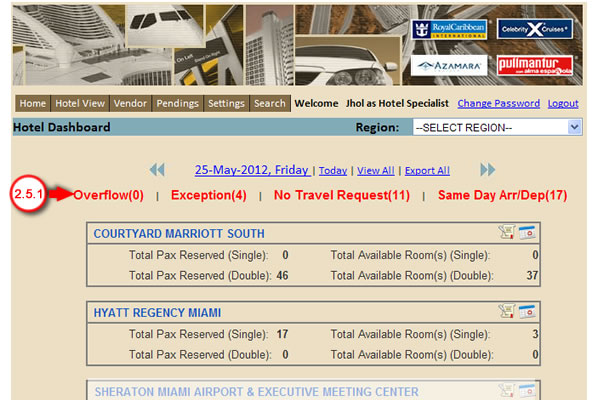

2.5.1 Under Homepage, Click on the Overflow link to view the list of Auto-booked crew that has no available room. (See Exception Process)
Created with the Personal Edition of HelpNDoc: Single source CHM, PDF, DOC and HTML Help creation